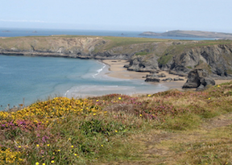
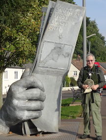
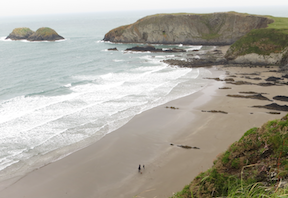
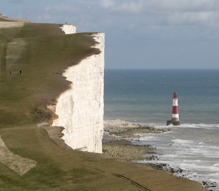

American Walker in Britain Part 2
Mar 11, 2017 · CommentsBritish-Walking
Choosing a Path
Obviously choosing a path is a matter of personal taste. In the first post I included some links where you could ideas on where to walk. I’ll lay out some concrete possibilities here, just to get you started. Don’t take this as a prescriptive list.
Would you prefer walking on the coast or in the hills? If a multi-day route along beautiful seacoast appeals to you then the obvious possibilities are the South West Coast Path in Devon and Cornwall or the Pembrokeshire Coast Path in Wales.
South West Coast Path
The South West Coast Path is 630 miles long so it’s not something you would tackle in one trip. One general piece of advice, is that when you are planning where to go, look at the itineraries offered by some of the tour companies. If a section of trail seems popular, there may be a good reason for it. For my first trip to the South West Coast Path I saw a number of tours that went from Padstow to St. Ives in Cornwall. A likely itinerary is to do five stages:
Padstow to Treyarnon
Treyanon to Newquay (pronounced new-key)
Newquay to Perranporth
Perranporth to Portreath
Portreath to St. Ives
 In terms of accommodatoins there’s not much in Treyarnon besides the Youth Hostel (which looked very nice to me, at least from the outside). One might get something in Porthcothan, a bit beyond Trearnon. The route out of Padstow is around a peninsula called Trevose Head. Padstow isn’t very far from Treyarnon because the direct route cuts across the base of a peninsula. It would be practical to take a bus or taxi out of Padstow to Porthcothan and then walk back to Padstow. For the second day, take the bus back out of Padstow to Porthcothan and then resume the walk.
I did this itinerary back in 2007. It’s a nice walk, and I think it’s quite popular. Both St. Ives and Padstow are substantial towns that attract a lot of holiday visitors. St. Ives is know for the Tate Gallery there and Padstow is know for fine dining because of restauranteur Rick Stein. But I don’t know who Rick Stein is and I don’t know about galleries, so if you are craving information about food or art you are in the wrong place. On both of my trips to Padstow I stayed at the London Inn and dined on pub food. I didn’t starve.
If you are a fan of the British TV show Doc Martin then by all means start your trip in Port Isaac, a day to the east of Padstow and the real life location for the fictional village of Portwenn. Port Isaac is even more quaint and charming in person than it appears in the TV show.
 Given the length of the South West Coast Path, there are lots of other possibilities. The northern section at the start of the walk from Minehead to Combe Martin or Ilfracombe also seems to be popular. It’s a beautiful coastal walk at the north end of Exmoor National Park. The terrain is much more rugged than the section from Padstow to St. Ives.
Pembrokeshire Coast Path
The Pembrokeshire Coast Path in Wales is another popular choice. I have only done a section north of St. Davids and a walk inland from Newport farther up the coast. So I can’t offer much in the way of practical advice on the itinerary, other than to say I found both  St. Davids and Newport to be pleasant spots. Ah, I do have one very practica tip. There is more than one Newport in Wales. The larger Newport is a substantial city in southeastern Wales not so far from Cardiff. That’s not the one you want. But there is a smaller, picturesque coastal village called Newport in Pembrokeshire on the Coast Path.
West Highland Way
The West Highland Way is one of the most popular routes. It starts north of Glasgow and goes for 96 miles to Fort William, passing the base of Ben Nevis, the highest peak in the British Isles The highlights of the walk are Loch Lomond and the beautiful valley of Glencoe.
Ye'll tak' the high road and I'll tak the low road
And I'll be in Scotland afore ye
But me and my true love will never meet again
On the bonny, bonny banks of Loch Lomond
Many parts of the route were originally a military road connecting to Fort William, which was a base for the pacification of the Highlands after the rebellion of 1745. Later is was a route for driving cattle down out of the Highlands to market in Glasgow and beyond.
I walked this route in 1998 on a self-guide tour arranged by Sherpa. I have great memories of leaving Kingshouse in Glencoe and walking up the Devil’s Staircase to the highest point on the path and a spectacular view of the valley below. And I remember being tired and footsore by the time I reached my bed in Kinlochleven, but that’s all part of the experience. In 2011 I drove through Glencoe with my sisters and it was a very different experience from walking the same valley.
The Coast to Coast Path
The Coast to Coast Path is not an offical route like the others, but it is very popular. My impression is that it had a higher proportion of non-British walkers than the other routes, although that may be true of the West Highland Way as well. The route passes through the Lake District, the Yorkshire Dales Natoinal Park, and the North York Moors National Park.1 In 2012 I walked this path from St. Bees to Richmond. It’s a good introduction to the Lake District, but includes the different landscape of North Yorkshire farther east. The variety of landscape is one of the attractions of the route.

The South Downs Way
The South Downs Way in southern England is not so very far from London. I have walked the last nine mile stretch into Eastbourne. That is a magnificent walk, but very unlike the rest of the walk. Based on what I have read, this could be a very nice walk with convenient access and forgiving terrain.
There are many other possibilities.
Some Resources
National Trails
Ramblers routes
Walking Englishman
London Hiker
Lonely Planet Top 10
Walking Britain
20 Superb UK Walks - The Guardian
- National Parks in the UK are not exclusively park land like a national park in the US. They generally are private land, but there are regulations to preserve the landscape. There are also other landscapes designated as Areas of Outstanding Natural Beauty that have some legal protection. [return]